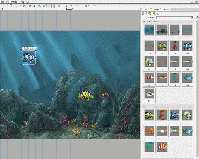
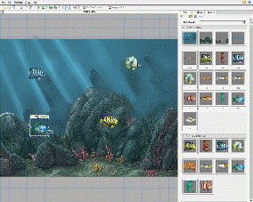
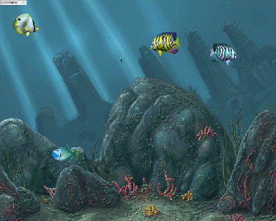

Torque 2D - Fish Demo Tutorial - Part 8
8. Config Datablock
Now that we have our fish behaving
properly, we need to duplicate that fish. One way we could do that would be to
drag over new animated fish and set up each of the settings we've already set.
Fortunately, there is an easier way to accomplish this: we can use a config
datablock. A config datablock is just a basic object that can hold any
sort of object data. This would be object data that you want to be repeated
across multiple objects. When you create an object, you can specify a config
datablock, and all valid data will be used. If your object has already set a
data value, which is also set on the config datablock, then your object's data
will take precedence (as it should). As you can imagine this is immensely
useful for assigning similar data to multiple objects. Browse out to your MyFishDemo/game/gameScripts
folder and locate a file named datablocks.cs . Add this
config datablock to the end of your file.
datablock t2dSceneObjectDatablock(FishDatablock) {
Class = "FishClass";
Layer = "16";
WorldLimitMode = "NULL";
WorldLimitMin = "-66.2102 -45";
WorldLimitMax = "66.1003 45";
WorldLimitCallback = "1";
minSpeed = "5";
maxSpeed = "25";
};
Code Sample 8.1.1
As you can see, we have all the important values we just set on our single fish. The two values you might not be familiar with are the WorldLimitMin and WorldLimitMax values. From -66 to 66 it spans the entire space that we visually specified in the Level Builder. We have a class of FishClass, our layer as 16, our proper world limit mode and min and max values, and our callback option. We also have our two dynamic fields for our min and max speeds. Make sure you save your datablocks.cs file.
8.2
Creating fish using our config datablock
Now that we have our config datablock, we need to allow T2D to register it. This requires you to click the Project -> Reload Project option. This will close and reload the current project to register our new config datablock. We can add in any of the fish Animated sprites of our choice and simply set the config datablock. To set the config datablock make sure the object is selected, click the EDIT tab, the Script rollout and select our FishDatablock from the config datablock dropdown. Drag and drop about 3 fish from your Animated Sprites object library into your level (as shown in Figure 8.2.1) and set their config datablocks accordingly. Save your level and then play your level. Your new fish should swim around just like the original (as shown in Figure 8.2.2).
|
 |
 |
|
|
 |